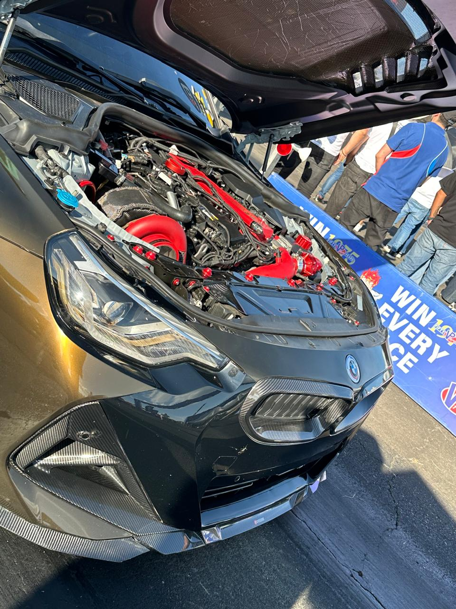
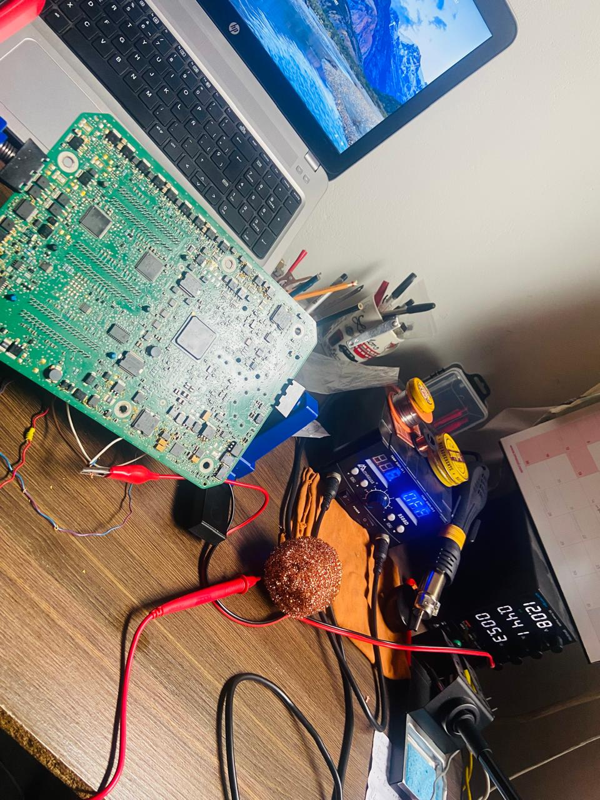
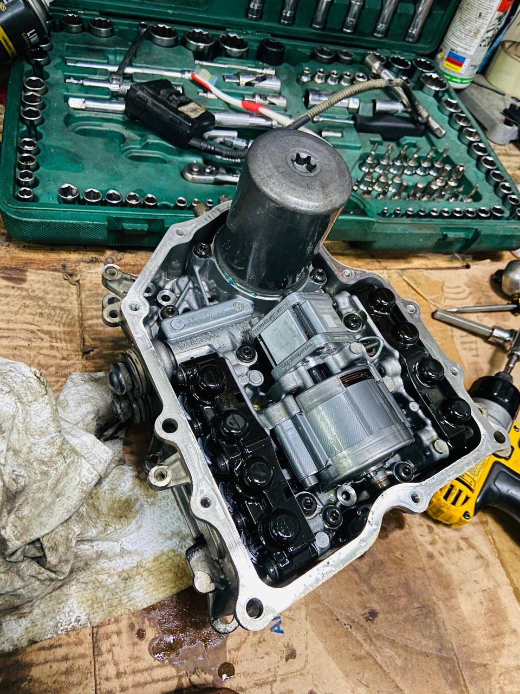
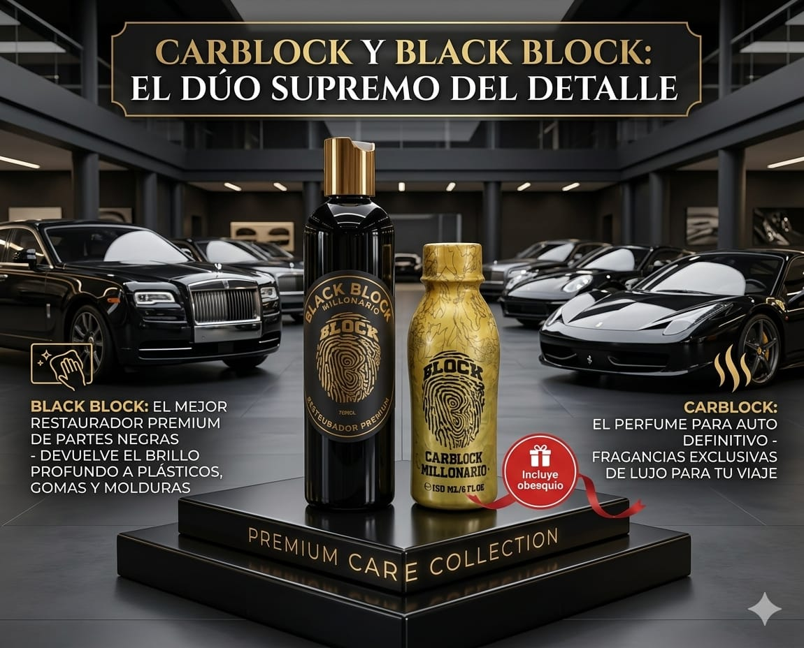
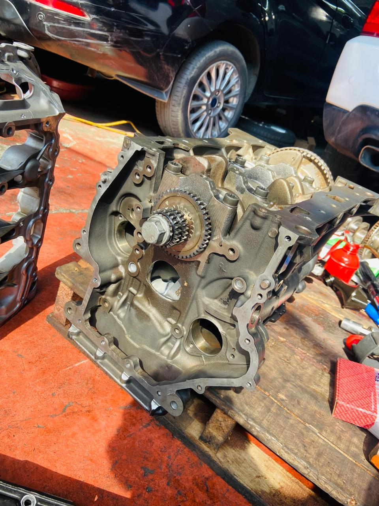
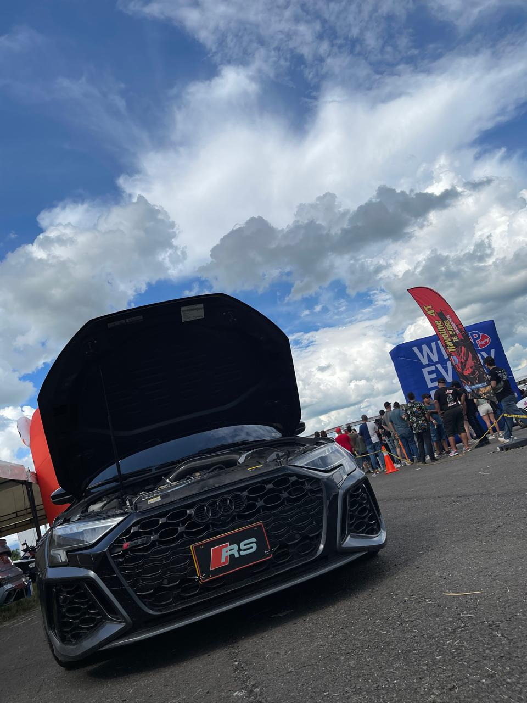
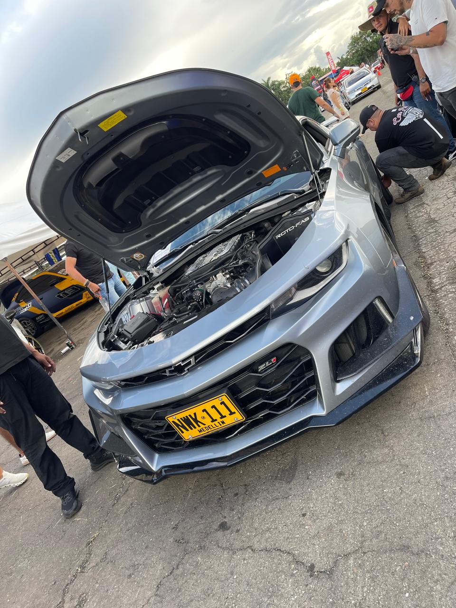

Detectamos fallas electrónicas con equipos profesionales.
ContactarEn CAR-ELECTRONIC somos una empresa especializada en electrónica automotriz y estética vehicular premium en el Valle del Cauca. Nos enfocamos en el diagnóstico electrónico avanzado, detección de fallas, revisión de módulos, sensores y optimización tecnológica de vehículos modernos. Además, ofrecemos productos exclusivos de perfumería vehicular premium como Carblack, diseñados para brindar una experiencia de confort, elegancia y personalidad en cada trayecto. Trabajamos con compromiso, honestidad y respaldo técnico, ofreciendo soluciones profesionales para vehículos de media y alta gama.
Proveer soluciones tecnológicas integrales en electrónica automotriz mediante el uso de metodologías de diagnóstico precisas y un soporte técnico riguroso de nivel de ingeniería, complementadas con una línea exclusiva de perfumería y estética vehicular premium. Buscamos optimizar el rendimiento de la arquitectura electrónica del vehículo y elevar la experiencia de confort interior de nuestros clientes en Cali, operando bajo estrictos principios de honestidad, excelencia y respaldo técnico superior.
Para el año 2031, Car-Electronic será reconocida en el mercado automotriz del Valle del Cauca como el centro especializado de referencia para el diagnóstico, reparación y optimización de sistemas de gestión electrónica en vehículos de media y alta gama. Asimismo, consolidaremos una red de distribución física y digital sólida para la marca Carblack, posicionándonos como líderes en la fidelización de clientes mediante el uso de canales y herramientas de comercio electrónico de última generación.

Diagnóstico computarizado para detectar fallas.

Análisis completo de sensores y módulos.

Mejora del rendimiento electrónico del vehículo.

Mantén tu vehículo con un aroma fresco y elegante. Fragancia duradera y presentación moderna.



Agenda tu diagnóstico ahora.
WhatsApp